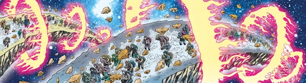

A controversial story about a pregnant couple attempting to migrate from a warzone planet to the safer destination of Earth. On the one hand, this presents the depravity and desperation of the plight of migrants.
Problematically, there are cartoonish depications of sexual violence (without any wider support provision from editorial), and a sense that the male half of the couple is being ennobled or commended by the writer (despite being a hot-tempered young man whose violent behavior is responsible for much of his pregnant partner's ultimate fate).
Art by Rufus Dayglo & Jose Villarrubia
| Story Title | Parts | Pages | w indicates a wraparound coverCovers | Year(s) | Issues | Writer | Artist | Colourist | Letterer |
|---|---|---|---|---|---|---|---|---|---|
| The Devil's Railroad | 14 | 84 | 2358: Rufus Dayglo 2360: Rufus Dayglo 2366: Rufus Dayglo3 | 2023-2024 | 2352-2355,2357-2366 | Peter Milligan | Rufus Dayglo | Jose Villarrubia | Jim Campbell |
| year | episodes | pages |
| 2013 | 0 | 0 |
| 2014 | 0 | 0 |
| 2015 | 0 | 0 |
| 2016 | 0 | 0 |
| 2017 | 0 | 0 |
| 2018 | 0 | 0 |
| 2019 | 0 | 0 |
| 2020 | 0 | 0 |
| 2021 | 0 | 0 |
| 2022 | 0 | 0 |
| 2023 | 10 | 60 |
| 2024 | 4 | 24 |
| 2025 | 0 | 0 |
| 2026 | 0 | 0 |
| 2027 | 0 | 0 |
| 2028 | 0 | 0 |
| 2029 | 0 | 0 |
| 2030 | 0 | 0 |
| 2031 | 0 | 0 |
| 2032 | 0 | 0 |
| 2033 | 0 | 0 |
| 2034 | 0 | 0 |